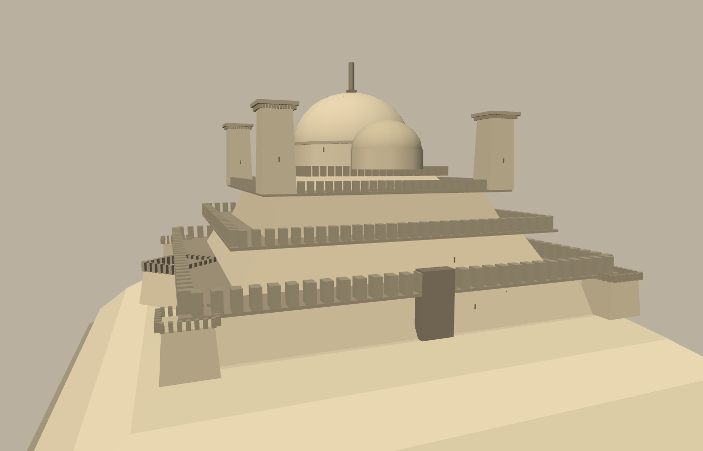

Every function in src/65-facade.js was checked against the rest of
src/*.js for a live call site. Every asset defined there is dispatched
somewhere in the real build (town/compound facades via 68-props.js and
69-district-content.js, or canton-scale set-pieces dispatched from
50-cantons.js: templeCanton, portDeckV2,
arenaDeckSquare) — except one, as of this catalog snapshot.
ordinatorFortress() has just been adapted (signature (c, y,
hw, opt), the same calling contract as arenaDeckSquare/
marketDeck/gardenDeck) for the Lighthouse canton
(r:150), which the owner is redesignating from
lighthouseDeck() to this. The planner still has to add the
one-line dispatch swap in platCanton() itself, so it is not
wired into CANTONS yet at the time of this render — the
same status funeraryTemple and templeCanton once
had before they were wired in. This page renders it standalone (own scene,
own camera, no changes to src/*.js) at the actual half-width a
real r:150/tiers:3 canton hands it (~92.5, per platCanton()'s
own tier-shrink math), so it can be judged at its real fitted scale before
the dispatch line lands.

function ordinatorFortress(c, y, hw, opt) — src/65-facade.js
A canton-scale walled fortress/prison, adapted to a platCanton()
dispatch target: a cross between a star fort and the Hagia Sophia,
still reading as the Ordinators' grim martial prison rather than a
literal copy of either. y/hw are the top
surface of the tiered plinth platCanton() has already
built by the time it calls this — the fortress rises FROM that
platform, scaled to its real half-width (rad = hw)
rather than a fixed 120-unit default; wall tone comes from the
canton's own c.tone, shaded down, instead of a random
pick. CANTON_TOPS[c.n] is set to that same platform
surface, matching what platCanton() itself already
records, so bridges/causeways still land where a pedestrian actually
arrives rather than at the fortress's own dome height.
The tiered platform's once-plain square perimeter now breaks at six
points — four angular corner bastions plus two true pointed
diamond bastions on the flanking faces, each rotated 45° off the
main wall so its own corner is the outward point — the trace
italienne signature, with one face left as a plain curtain run for
the gatehouse. In place of the old small blocky keep, the centre now
carries Hagia-Sophia-scaled massing: a stepped plinth, a wide drum, a
big ribbed central dome with two lower flanking domes fore/aft (the
stepped half-dome impression of the real building's silhouette), a
small nested crown dome and an iron signal mast — all in the
wall's own stone/iron tones, never gilt, so it reads as a fortress
keep wearing a huge dome rather than a temple. Owner round 3 retuned
two things: every parapet now runs the file's own
crenellate() helper (also otherwise uncalled) with much
smaller, closely-spaced, "Asiatic" merlons — slender and tall
for their width — in place of the first pass's chunky,
near-cubic Western castle blocks; and the four corner watchtowers are
restyled off compound()'s own corner towers in
60-land.js instead of the old slender minaret look: a
squat, square FR8 shaft under a flat, overhanging coping
cap (the same ~1.17x overhang ratio as a clan compound's own corner
towers, scaled up), with a slim crenellated gallery riding just under
that cap, so these read as the Ordinators' own blocky lookouts, not a
clan tower or a mosque minaret. One ironbound gatehouse still breaks
the wall — still the only other place this asset uses the
metal family, alongside the drum's iron signal mast.
opt now exposes ry (rotation, default 0 —
a plat canton's own convention) and col (wall tone
override) in place of the old positional ry/col
parameters, plus tiers (default 3), h (wall
height, default hw*0.583 — the same ratio the old
fixed 70/120 pair used), towerH and keepH
overrides.